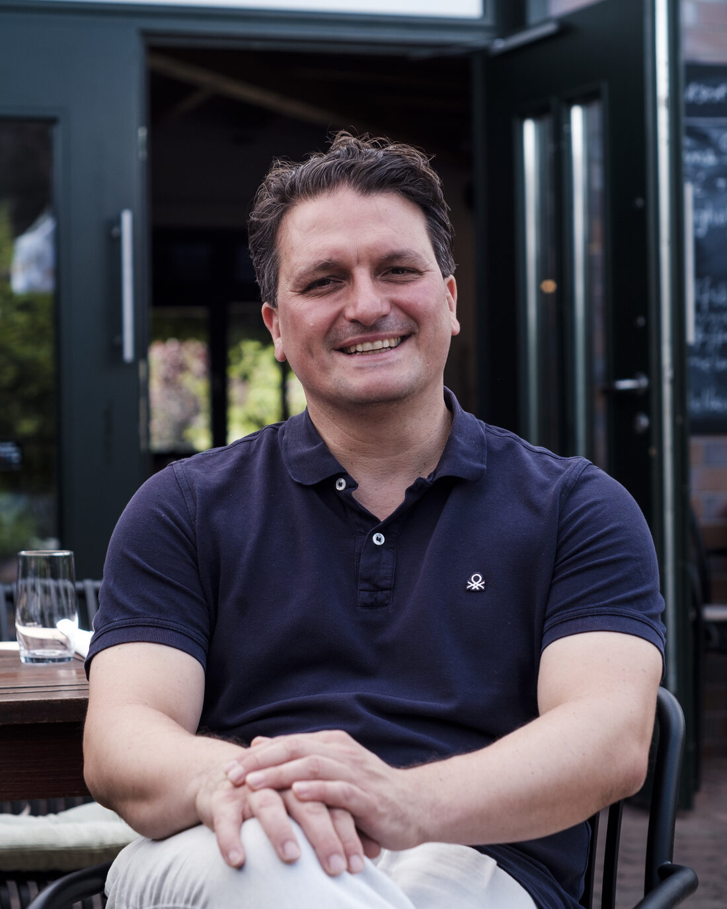

Bodenständig, frisch und ohne großes Tamtam – so kochen wir auf der Ginnheimer Höhe.
Bei uns trifft regionale Küche auf italienische Lebensart: frische Pasta, kräftige Klassiker und Salate, die nach Saison gehen. Vieles entsteht in Handarbeit – von den Saucen bis zu den Kuchen.
Dazu täglich wechselnde Tages- und Saisongerichte. Was gut ist, kommt auf den Teller – ehrlich angerichtet und gern zum Teilen.

Regional & italienisch
Bodenständige Klassiker neben Pasta und Antipasti – das Beste aus beiden Küchen.
Hausgemacht
Frische Pasta, Saucen und Kuchen aus eigener Herstellung.
Saisonal
Täglich wechselnde Tages- und Saisongerichte, je nach Markt und Wetter.